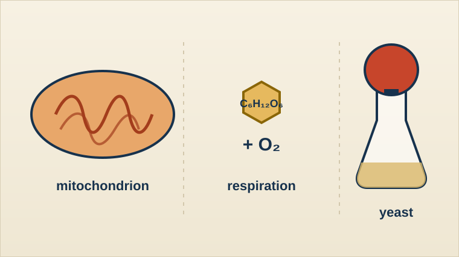

Year 9 Biology
Life processes and respiration
How do we know something is alive, and how do cells release energy? Characteristics of life, viruses, mitochondria, aerobic and anaerobic respiration, and yeast.

Lessons
Is it alive? Life processes
The seven characteristics of living things, mystery organisms, and why viruses are borderline (25 minutes).
Mitochondria and respiration
Breathing versus respiration, ATP, the mitochondrion, and the limewater test for carbon dioxide.
Aerobic and anaerobic respiration
Word and symbol equations, anaerobic respiration in muscle and yeast, and checking an AI explanation.
Yeast in the UAE Bakery: simulation lab
A virtual investigation of how temperature affects respiration in yeast, with a test, puzzles and an AI feedback task.
Labs, worksheets and practice
Respiration lab: 3D mitochondrion and equations
Label the mitochondrion, follow oxygen to the cell, balance the equation and spot the errors in an AI answer.
Mini quiz: respiration and living things
A 10-mark quiz with a mark scheme.
Breathing versus respiration table
Compare, sort and correct the common misconception.
Limewater record sheet
Prediction, safety, observations and explanation.
Homework choice: Photo hunt or Is it alive?
Two short tasks on the seven life processes.
Virus role cards
Cards to act out how a virus reproduces.
Yeast investigation: paper tasks
Variable sort, results tables and a conclusion, if devices are unavailable.